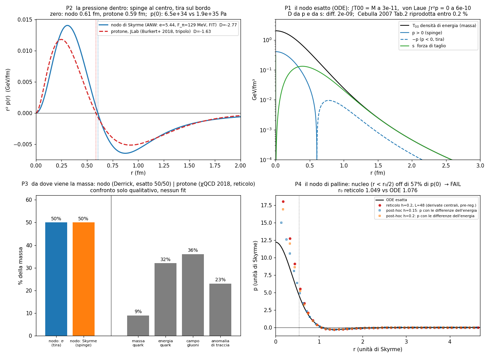
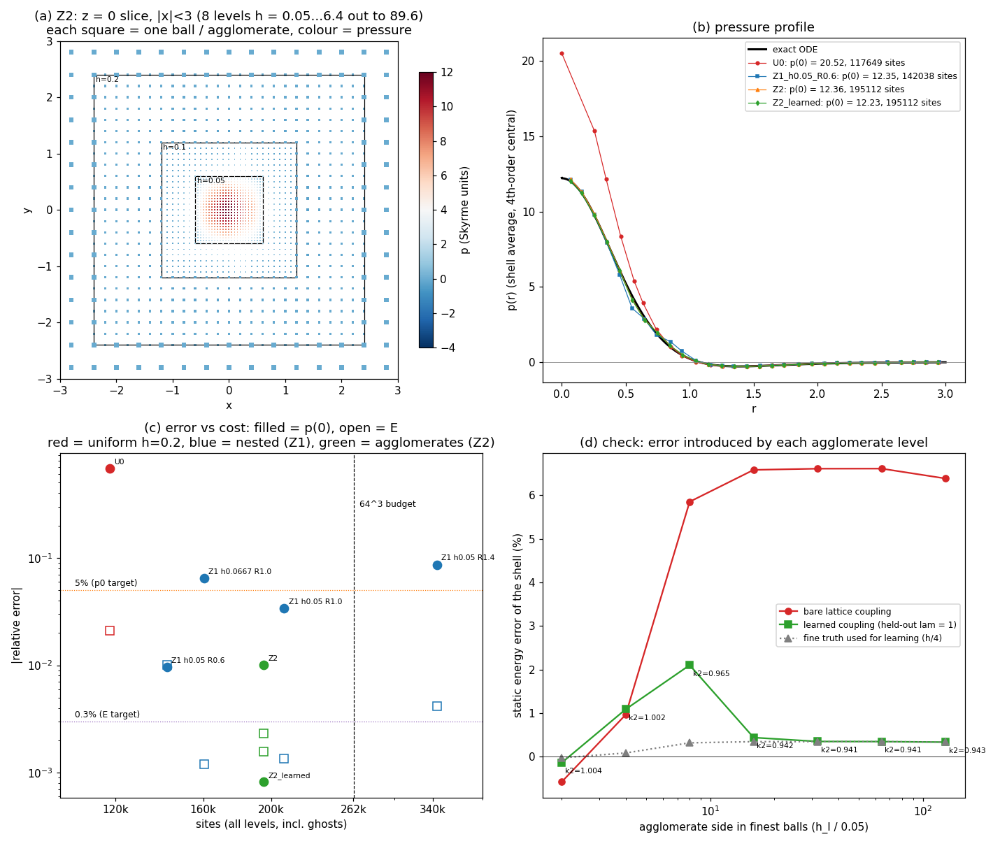

Relazione tecnica · particle_sim · 12 ottobre 2026 · versione 2
Questa relazione spiega, a chi non è fisico, cosa stiamo costruendo, cosa funziona davvero, cosa no, e dove stiamo andando. Ogni numero citato è stato misurato nel simulatore con criteri scritti prima di fare il test, e i fallimenti sono riportati come i successi.
Immagina che tutto l'universo sia fatto di palline identiche che obbediscono a una regola sola, semplicissima. Non programmiamo "l'atomo" o "la luce": programmiamo la regola delle palline e guardiamo cosa succede. Se da quella regola escono da soli la luce, gli atomi, le molecole, e si comportano come quelli veri misurati nei laboratori, allora abbiamo capito qualcosa di come è fatto il mondo. Se non escono, abbiamo sbagliato regola.
La regola scelta, dopo mesi di tentativi, è questa: ogni pallina corre sempre alla velocità della luce, e a ogni passo ruota un po' il suo stato interno. La chiamiamo zig-zag. Se la pallina non rimbalza mai, è luce. Se rimbalza avanti e indietro, è un elettrone: il ritmo dei rimbalzi è la sua massa.
Tutto corre alla velocità della luce. La luce corre nello spazio, la materia corre nel tempo. La massa è la corsa trattenuta.
Un simulatore normale usa tabelle: il ferro ha questa densità, l'idrogeno emette questa luce. Noi vietiamo le tabelle. Gli unici ingredienti ammessi sono le costanti fisiche fondamentali (velocità della luce, carica dell'elettrone, ecc.) e il numero di protoni nel nucleo. Tutto il resto deve emergere. Ogni volta che qualcosa è messo a mano, lo segniamo come "debito" nei documenti.
Gli esperimenti veri (la luce dell'idrogeno, la massa delle molecole, la pressione dentro il protone) servono solo come esame finale: non per aggiustare il simulatore, ma per bocciarlo o promuoverlo.
Un fotone fatto di 250.000 palline, in 3D, con il tempo che va avanti e indietro. 96 esperimenti storici in catalogo, dalla doppia fenditura a Bell.
Idrogeno, elio, H₂: ogni elettrone è una nuvola di palline. Numeri esatti al centesimo di percento, senza tabelle.
Tutto sulla regola zig-zag: un atomo vivo in cui l'elettrone si muove ogni istante, un fotone che lo eccita, e a zoom profondo il protone come nodo che ruota e respira.
Un "occhio" che legge la forma dello spazio dai legami tra palline; un agglomeratore che raggruppa palline in blocchi senza perdere precisione.
Questa è la parte che conta. Ogni riga è un confronto tra quello che esce dalle palline e quello che misurano i laboratori veri.
| Cosa | In parole semplici | Palline | Realtà | |
|---|---|---|---|---|
| Energia dell'idrogeno | quanto è legato l'elettrone al protone | 13,60575 eV | 13,598 eV | ok |
| Luce dell'idrogeno (Lyman-α) | il colore esatto che emette | 121,565 nm | 121,567 nm | ok |
| Doppia fenditura | il fotone passa da due buchi insieme | 0,995 | 1 | ok |
| Test di Bell | due fotoni "legati" a distanza | 2,832 | 2,828 | ok |
| Molecola H₂, vibrazione | quanto in fretta vibrano i due atomi | 4393 ± 36 | 4401 | ok |
| Relatività dal fluido | un nodo che corre si accorcia come dice Einstein | 1,5% | — | ok |
| Coppie dal vuoto | un campo forte crea elettrone + antielettrone | 0,3% | formula di Schwinger | ok |
| Protone come nodo: massa | una massa sola, non dipende dalla scatola | 1,2410 | 1,2314 | ok |
| Pressione dentro il protone | dove il vuoto smette di spingere | 0,605 fm | 0,586 fm | ok |
| Magnete protone/neutrone | rapporto senza manopole | 1,42 | 1,46 | ok |
| Materia da sola luce | luce che si attacca a sé stessa fa grumi con massa | 4,92 | 4,74 | ok |
| Zoom con agglomerati (protone) | fine al centro, blocchi fuori: stessa precisione, costo ridotto | 0,08% | esatto | ok |
| Grumo di luce eccitato | il secondo livello | 1,71 | 1,45 | no |
| Massa del muone da una forma | perché il muone pesa 207 elettroni | ≤ 1,8 | 206,8 | no |
| Forma dello spazio che nasce da sola | palline che si costruiscono la geometria | isole | — | no |
Mettendo insieme tutto quello che ha passato gli esami, esce un'immagine coerente, che abbiamo scritto in una pagina a parte (Universo di Palline). In breve:

Perché il muone pesa 207 volte l'elettrone? Nessuna forma che abbiamo provato lo spiega. È il problema aperto numero uno.
Ogni regola "chi è forte diventa più forte" spezza lo spazio in isole invece di costruire una forma. Tre tentativi, tre fallimenti.
I nodi che sappiamo fare sono protoni. L'elettrone come nodo del fluido, con la sua carica, resta aperto.
Ogni numero che torna era già noto: lo abbiamo ritrovato con un metodo nostro. È validazione, non scoperta. Serve a dimostrare che il simulatore non sbaglia.
Un elettrone vero richiederebbe 10 miliardi di celle per essere simulato pallina per pallina a scala atomica. Un atomo d'oro, molto di più. Non è un limite: è il motivo per cui esiste l'agglomeratore.
L'idea è quella dei videogiochi moderni (Nanite): da vicino vedi ogni dettaglio, da lontano i dettagli vengono raggruppati in blocchi che si comportano nello stesso modo, con un errore piccolo e controllato. Qui però i blocchi non sono disegnati: la regola dei blocchi viene imparata dalle palline stesse, un livello alla volta, scegliendo automaticamente il raggruppamento che perde meno precisione. Le palline non cambiano mai.
Lo abbiamo appena dimostrato sul protone. Con palline grosse ovunque, la pressione al centro sbagliava del 68%. Con palline fini solo al centro e 7 livelli di blocchi sempre più grossi all'esterno, ciascuno con una regola imparata (14 numeri in tutto), la pressione al centro è giusta allo 0,08% e la massa allo 0,16%, usando meno celle di un reticolo medio uniforme. E una cosa bella: dal terzo livello in su la regola imparata diventa sempre la stessa, perché il campo lontano si ripete uguale a ogni zoom, come un frattale.

Il percorso, in ordine, senza saltare passi:
--esperimento fenditure|airy|arago|entanglement.particle_sim: ogni studio ha il suo documento in docs/, scritto in italiano semplice, con numeri, fallimenti e debiti. Tutto è su GitHub con la storia completa.La versione 1 (settembre 2026) descriveva il simulatore originale di particelle. Questa versione 2 copre il lavoro da settembre a ottobre 2026: fotone, atomi, molecole, nodi, vuoto, geometria, lo zoom con agglomerati e la scelta della regola zig-zag come unica strada.